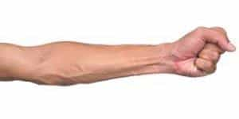
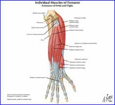
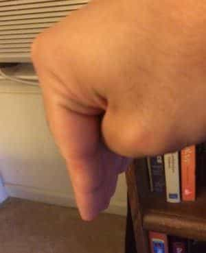
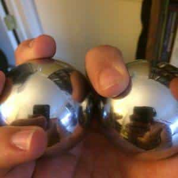
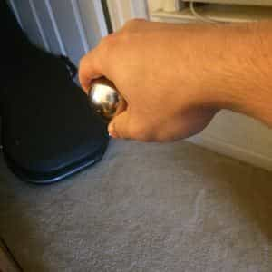
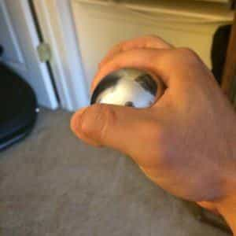
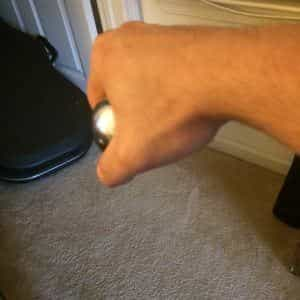
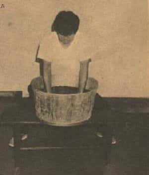

< < < Back
4 Esoteric Methods For Increasing Your Grip Strength – Return Of Kings
If you will recall, a few weeks ago I published an article on how to train the grip. In that article I stated:
You will not have a heavy deadlift, overhead press, or bench press if you have weak hands. And for athletes, your punching, wrestling, grappling, throwing, and catching will be ineffectual without proper forearm training. In the words of Thomas Inch and many other pre-20th century strongmen, weak hands makes a weak man.
And I stand by that statement. I feel that training the hands and forearms is of such importance, that another article on training the grip is necessary. More specifically, this article will deal with other methods of training that are slightly more esoteric than the DIY techniques discussed in the last article, but can be done in conjunction with those techniques to truly create awe-inspiring forearm strength.

The Techniques
A muscle group that is often neglected by those wanting stronger hands and forearms are the hand extensors, the muscles that lift the fingers up as shown in the picture below:

These muscles can be trained in two ways: The first are the fingertip levers lay your hand flat on the floor, and put a weight plate on top of your fingers. Then lift your fingers up, lifting the plate slightly up. Lower and repeat for repetitions. This can be done with all fingers, or one finger, or any combination of fingers depending on what your training goals are.

A variation of this is to hold your hand in the air with fingers down, and then applying pressure to the fingers with your other hand, lift the fingers up. Do a few repetitions of this for each hand. Then do this for each thumb as well.

The next series of exercises that can be done will require a set of the Chinese iron balls. Perhaps you already own a pair of these for reducing stress or meditation. Or you can borrow a pair from your parents or a co-worker (it’s likely somebody in your life owns one). If you can’t get of these for free, you can go to a local Asian foods market and pick up a pair for somewhere in the ballpark of 10 dollars. And if all else fails, you can buy a set from a martial arts supply company such as the ones in this link.
Now that you have a pair of them, take the two in your hand, with your palm up, and begin circling the balls around in your palm using your fingers.

That’s pretty easy, right? Anybody should be able to do this. “How is this supposed to make me stronger?” you might ask-and to that I would say-try turning your palm down and circling the balls in your palm.

As if you didn’t think I was cool enough, I play guitar too!
This is much more difficult-indeed, you will most likely not be able to do this on your first try. As an intermediate step, take the balls and turn your hand 90 degrees, and circle the balls. If you still can’t do this, start with the palm up and slightly rotate your hand more and more until you can hold the hand at a 90 degree angle from the palm-up position.

From here, continue rotating the hand more and more until you can hold the palms down and circle the balls. Once you can circle the balls with the palms down, you will notice that all fingers are straining greatly in this exercise. Do this for both hands.

Observe the flexion in my thumb and fingers
When this becomes too easy (ie: When you can do at least 10 rotations of the balls with palms down), try doing it with three balls. If that becomes too easy, do four balls. And if you still need harder exercises, grip world record holder John Brookfield suggests buying 5 pound shotputs and starting the process all over again. Bear in mind that I can only do three balls with palms down—if you are capable of doing this exercise with the shotputs, you are likely a world record holder.
Now that we are on the subject of the hoary Orient, another forearm training technique they have invented is sand blasting. You have likely seen this done in martial arts films such as Enter the Dragon: standing above a bucket of sand, explosively thrust your fingers into the sand as deep as possible, until you can touch the bottom. In traditional kung fu schools, the buckets are filled with mung beans, sand, and finally Iron BBs. While this thrusting technique will condition your outstretched fingers to take impact and build up calluses on them, this will not specifically develop the grip.
To develop the grip with sand blasting, once your hand is in the sand, clench and unclench your fist—you will be surprised at how difficult this is, particularly if you bury your hand up to the wrist. If this is too difficult, bury your hand up to the big knuckle and gradually work up to the wrist. As the explosiveness is not really necessary for developing the grip, you can “worm” your hand into the sand rather than thrusting it in with one move.

And finally, a deceptively simple method of training the grip is bar twirling. Have you ever twirled a drum stick? Imagine doing that, but twirling a long piece of iron rebar. The aforementioned John Brookfield recommends a 4 foot long, 3/4 inch thick rebar. Just twirl the bar slowly and deliberately with all fingers.
If you cannot do the rebar, just a curtain rod and build up to the thick bar. Once the 3/4 inch thick bar becomes too easy, work up to a 1 inch thick bar, and so on and so forth.
Conclusion
It may seem that two articles on grip training is redundant, but having two articles just emphasizes its importance. Now that you have sufficiently trained your grip to a high degree, you can begin learning “Tricks” that will both show off your strength, and develop your hand strength further. But perhaps that will be for another day.
Read More: Two Do-It-Yourself Methods For Training Your Forearms